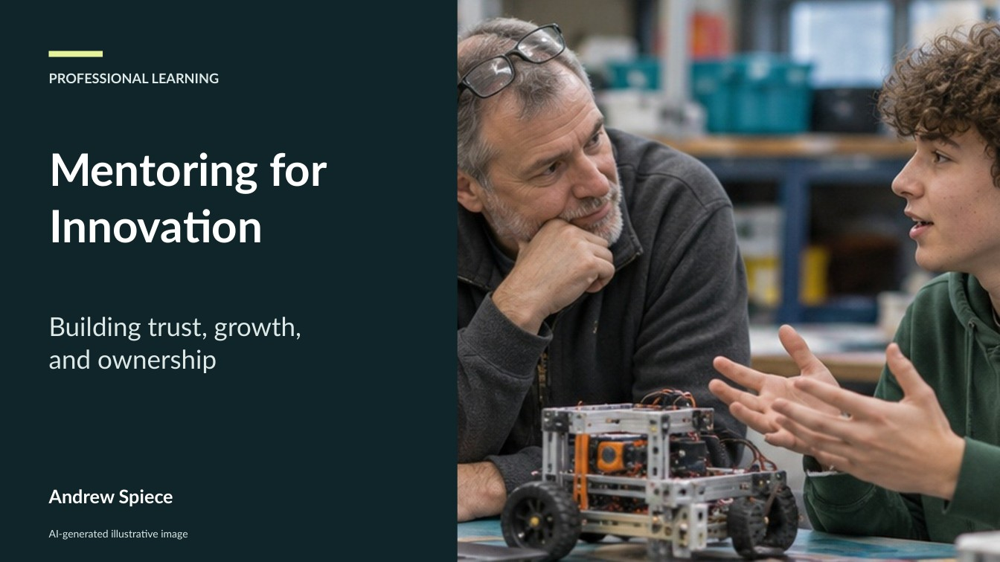
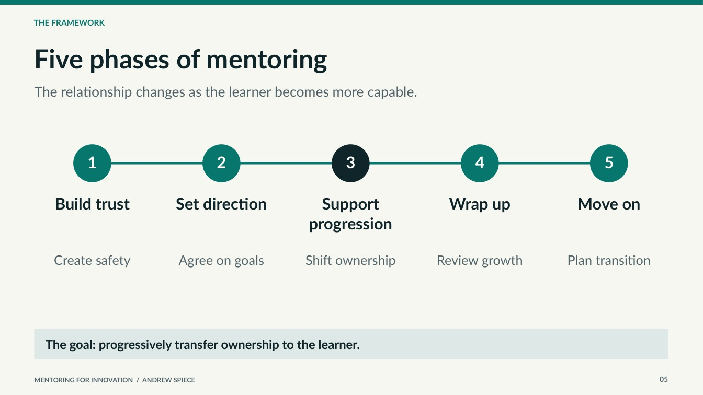
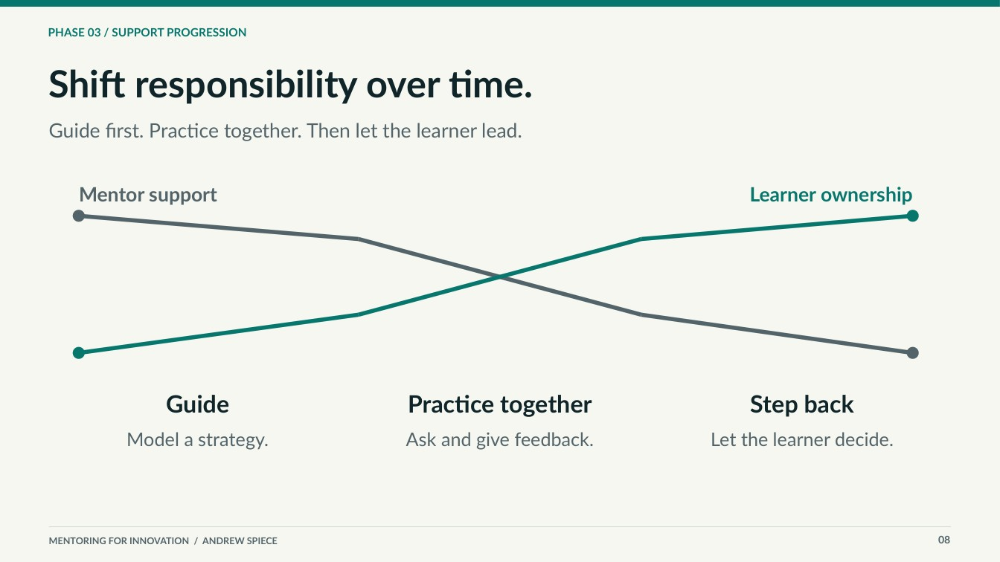
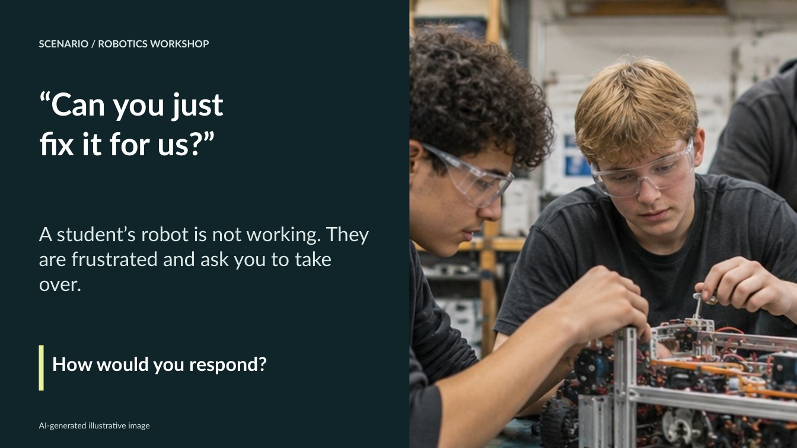
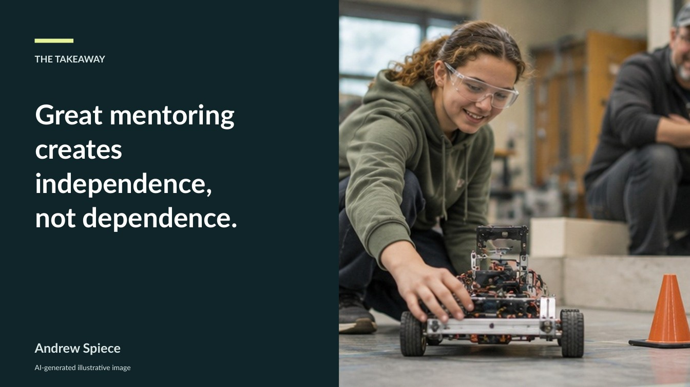

01 / Challenge
Help mentors develop independent innovators.
Mentors in youth robotics need more than technical expertise. They need a way to build trust, guide problem-solving, and gradually hand responsibility to the learner. Two original mentoring presentations were consolidated into a modern conference-style learning experience that organizes those skills into a practical framework for adult learning.
My role was to develop and present the mentoring materials, connecting mentoring practice with goal-setting, feedback and reflection. The redesigned experience emphasizes reflective discussion, an authentic robotics scenario, partner practice and a concrete commitment to apply the learning.
02 / Completed presentation
Building trust, growth and ownership.

Includes facilitator notes on every slide, discussion prompts, a robotics mentoring scenario, partner practice and a closing reflection.
03 / Selected slides
From framework to authentic practice.
These previews are rendered directly from the completed presentation. Select a slide to enlarge it or open the full PDF above.




04 / Instructional approach
Connect principles to mentoring practice.
The archive describes the mentoring work in connection with Merrill's First Principles of Instruction. The following is a retrospective instructional-design interpretation of the original work and redesigned presentation, not a claim that each phase was explicitly labeled in the original slides.
Frame mentoring around real decisions and the challenge of developing independence.
Ask participants to consider familiar mentoring relationships and their own experiences.
Contrast coaching with mentoring and introduce strategies for learning conversations.
Use a robotics scenario and partner role-play to practice exploration, feedback and action planning.
End with a concrete commitment participants can apply in their next mentoring conversation.
05 / Source archive
Preserve the original work.
The new deck combines and refines two earlier completed presentations. Their original content remains available for historical reference.
View the original presentations
Evidence and attribution: The redesigned deck builds on the original mentoring materials with AI-assisted visual design and clearly labeled AI-generated illustrative photography. Unverified historical research percentages were omitted. The completed presentation demonstrates instructional design and facilitation materials, not measured learning gains or verified delivery of this redesigned version.
Let's make learning useful.
Let's talk about building effective learning experiences for teams and organizations.
Contact Andrew ↗